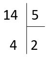

Références :
- Cours d'algorithmique, DIU EIL, Nantes
Germain BECKER & Sébastien POINT, Lycée Mounier, ANGERS 
Objectifs :
Dans un algorithme, des variables sont utilisées pour stocker des valeurs qui peuvent être des nombres (entiers, réels, ...), des chaînes de caractères, des booléens et beaucoup d'autres choses encore.
Le symbole $\leftarrow$ est celui de l'affectation. Par exemple, a $\leftarrow$ 2 signifie « la variable a prend la valeur 2 ».
L'opération arithmétique div est le quotient de la division entière et mod est le reste de la division entière.
Par exemple, 14 div 5 = 2 et 14 mod 5 = 4 car 14 = 5*2+4. Rappelez-vous :

Dans toute la suite du document, toutes les variables sont des entiers ou des booléens.
Que valent N et P après l'exécution de cet algorithme ?
N ← 2
P ← 3
N ← P + 1
P ← NQue vaut B après l'exécution de cet algorithme ?
A ← 8
B ← (A ≥ 10)Supposons que N vaut 2 ; que vaut P après l'exécution de cet algorithme ?
P ← N mod 5
P ← N div PPour chacun des trois algorithmes précédents, dénombrer le nombre d'affectations, le nombre d'opérations arithmétiques et le nombre de comparaisons.
Une instruction conditionnelle, ou instruction de test, permet de faire des choix dans un algorithme en fonction de la valeur d'une condition. On parle souvent d'une instruction si-alors.
Une condition est une expression qui est soit vraie, soit fausse, c'est donc un booléen.
Supposons que A vaut 1 au début ; que vaut-il après l'exécution de cet algorithme ?
si A ≥ 0
alors A ← A - 1
sinon A ← A + 1
fin siL'algorithme ci-dessous (au sens ou une même valeur de A initiale induit une même valeur de A après leur exécution) à celui présenté dans l'exercice 5 ?
si A ≥ 0
alors A ← A - 1
fin si
si A < 0
alors A ← A + 1
finsiPour chacun des deux algorithmes précédents, dénombrer le nombre d'affectations, le nombre d'opérations arithmétiques et le nombre de comparaisons.
Un site internet de développement de photos propose le tirage sur papier des photos au tarif de 0,11 € l'unité ; le tarif passe à 0,08 € l'unité pour une commande d'au moins 200 photos. Proposez un algorithme qui affiche le montant à payer selon le nombre de photos à développer.
La boucle Pour est une structure qui permet de répéter plusieurs fois l'exécution d'une ou plusieurs instructions. On parle de répétitive énumérée car on peut énumérer à l'avance les valeurs de l'itérateur de boucle.
Exemple : dans la boucle « pour i de 0 à 3 » ; on peut énumérer les valeurs de l'itérateur i qui prendra les valeurs 0, 1, 2 puis 3.
Ainsi, une boucle Pour s'utilise lorsque l'on connaît à l'avance le nombre d'itérations à effectuer. Chaque passage dans la boucle Pour s'appelle une itération.
Supposons que A vaut initialement 10 ; combien vaut-il après l'exécution de cet algorithme ?
pour i de 2 à 5 faire
A ← A + i
fin pourSupposons que V vaut 0 initialement ; combien vaut-il après l'exécution de cet algorithme ?
pour I de 1 à 4 par pas de 1 faire
si I est pair
alors V ← V + I*I
fin si
fin pourOn considère l'algorithme précédent.
I est pair est-elle évaluée ?V change-t-elle de valeur ?Supposons que A vaut 1 initialement ; combien vaut-il après l'exécution
de cet algorithme ?
pour i de 0 à 3 faire
pour j de 0 à 2 faire
A ← A + i*j
fin pour
fin pourLa boucle Tant que est aussi une structure qui permet de répéter plusieurs fois l'exécution d'une ou plusieurs instructions. On parle de répétitive conditionnée car c'est une condition qui va déterminer le nombre d'itérations à effectuer. Ainsi, une boucle Tant que s'utilise lorsque le **nombre d'itérations n'est pas connu à l'avance**. Chaque passage dans la boucle Tant que s'appelle aussi une itération.
Supposons que D vaut 7 initialement ; que vaut-il après l'exécution de cet algorithme ?
tant que D > 3 faire
D ← D - 3
fin tant queOn considère l'algorithme précédent.
D vaut 2 après l'exécution de cet algorithme. Quelles valeurs parmi celles proposées ci-dessous pouvait-il avoir initialement ? -2 ; 2 ; 6 ; 14 ; 25.D vaut 25 initialement ; combien d'itérations (c'est-à-dire de passages dans la répétitive) ont lieu avant que l'exécution de cet algorithme ne se termine ?Proposez un algorithme qui utilise une boucle Tant que qui a pour but d'afficher le quotient de la division entière d'un entier naturel A par un entier naturel B.
Une fonction est un ensemble d'instructions qui peut recevoir des arguments ou paramètres (qui sont des valeurs ou des variables) et qui peut renvoyer le contenu d'une ou plusieurs variables.
Voyons comment écrire l'algorithme en pseudo-code d'une fonction. Prenons l'exemple d'une fonction nommée maximum qui prend deux nombres en paramètres et qui renvoie le maximum des deux. On l'écrit ainsi en pseudo-code :
fonction maximum(a,b)
si a > b
alors renvoyer a
sinon renvoyer b
finsiProposez le pseudo-code d'une fonction minimum qui renvoie le minimum des deux nombres donnés en paramètres.
Proposez le pseudo-code d'une fonction minimum4 qui renvoie le minimum des 4 nombres donnés en paramètres. Contrainte : vous devez faire appel à la fonction minimum !
Les élèves d'une classe ont eu 4 notes. Le professeur, très généreux, décide de retirer la note la plus basse avant de calculer la moyenne de chaque élève.
Proposez le pseudo code d'une fonction nouvelle_moyenne qui prend les 4 notes en paramètres et qui renvoie la moyenne calculée après avoir retiré la moins bonne.
Références :
Germain BECKER & Sébastien POINT, Lycée Mounier, ANGERS